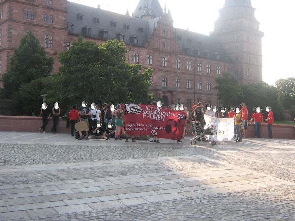
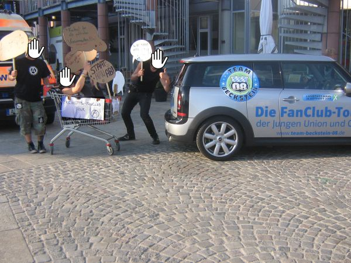

2. Pressemitteilung des AK VersammlungsFREIHEIT
Heute versammelten sich insgesamt etwa 70 Personen, um bei einer Wahlkampfveranstaltung der CSU gegen das neue bayerische Versammlungsgesetz zu protestieren.
Gegen 18 Uhr fanden sich ca. 40 Personen auf dem Marktplatz ein und eröffneten die Kundgebung mit einem Redebeitrag der Anarchistischen Gruppe Aschaffenburg. Zu diesem Zeitpunkt war noch nicht viel vom Wahlkampfzirkus zu sehen, dafür einige Streifenbeamte und Zivis, die Bereitschaft hielt sich vor (oder im?) Schlappeseppel auf.

Beginn der Kundgebung
Die Menge wuchs im Laufe der Zeit noch kräftig an, es folgten Redebeiträge zu den Themen Versammlungsfreiheit und Becksteins Politik.
In der Zwischenzeit fuhr das „Team Beckstein“ der JU vor, was einige Teilnehmer spontan zum Bau eines „Freiheits-Fanclub Tour“-Gefährts veranlasste, welches einige Runden für die Kameras der anwesenden Journalisten über den Platz drehte. Die bis dato recht freundlichen Uniformierten gaben sich großzügig, konnten es sich aber nicht verkneifen, darauf hinzuweisen, dass gerade ein nicht genehmigter Umzug stattfand und man die Leute und den Anmelder der Kundgebung jetzt mitnehmen könnte. Wenn man nicht so freundlich wäre…
In der Zwischenzeit enttarnten sich noch 2 Zivis. Der eine wurde von einer aufgebrachten Frau beschuldigt, ihre Bankkarte gestohlen zu haben und musste von seinen uniformierten Kollegen unterstützt werden. Kann man sich ja mal für die Zukunft merken.

Freiheits-Fanclub Tour
Gegen 19 uhr wurde der letzte Redebeitrag verlesen, die Kundgebung war durch die Auflagen spätestens um 19:15 Uhr aufzulösen. Eine merkwürdige Auflage, ursprünglich sollte die Kundgebung bis 19:30 Uhr durchgeführt werden. Das Gerücht machte die Runde, dass genau zu diesem Zeitpunkt Becksteins Tourbus auf dem Schloßplatz einfahren solle. Alles klar, Protest unerwünscht – also blieben die meisten Leute noch vor Ort, um Beckstein mit Pfeifkonzert und Buhrufen zu empfangen. Viele Beckstein-Fans fanden sich jedoch nicht ein, die Veranstaltung fiel deutlich kleiner aus als viele erwartet hatten. Beckstein wurde bei seiner Tour durch den Spessart auch in Marktheidenfeld (Flyer und eine ein bisschen gescheiterte Transpiaktion (keep going  ) auf der Messe) und Mömlingen von kritischen Stimmen begleitet:
) auf der Messe) und Mömlingen von kritischen Stimmen begleitet:
Bedenken äußerten gestern nur drei Studenten und zwei Schüler aus dem Landkreis Miltenberg. Ihre Namen wollen sie nicht nennen, aber sie „wollen zeigen, dass es eine Opposition in Bayern gibt“. „JU – jung und unerwünscht“ steht auf dem Kleid der jungen Frau. Von Landrat Ulrich Reuter und dem Landtagsabgeordneten Berthold Rüth fühlen sie sich nicht ernst genommen. „Inhaltlich oberflächlich“ seien sie im Gespräch gewesen. Die Polizei nimmt die Personalien der jungen Menschen auf und schirmt sie von Beckstein ab. „Die Jugend ist doch nicht unerwünscht“, sagt ein älterer Herr – und schüttelt den Kopf.
Main Echo, 14.08.2008
Diesen Auszug aus einem Artikel zu Becksteins Wahlkampftour kann man sich getrost auf der Zunge zergehen lassen, deutlicher kann man die repressiven Verhältnisse in Bayern nicht veranschaulichen.
Pressemitteilung des AK VersammlungsFREIHEIT: (mehr…)